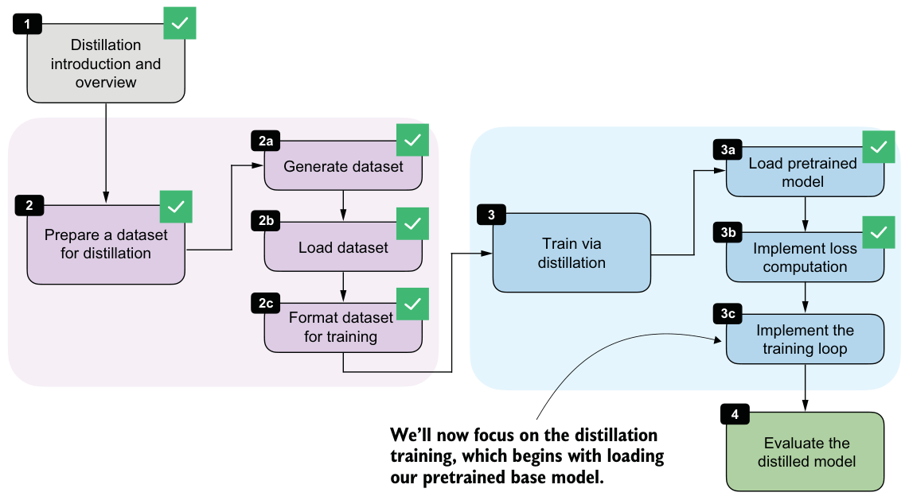
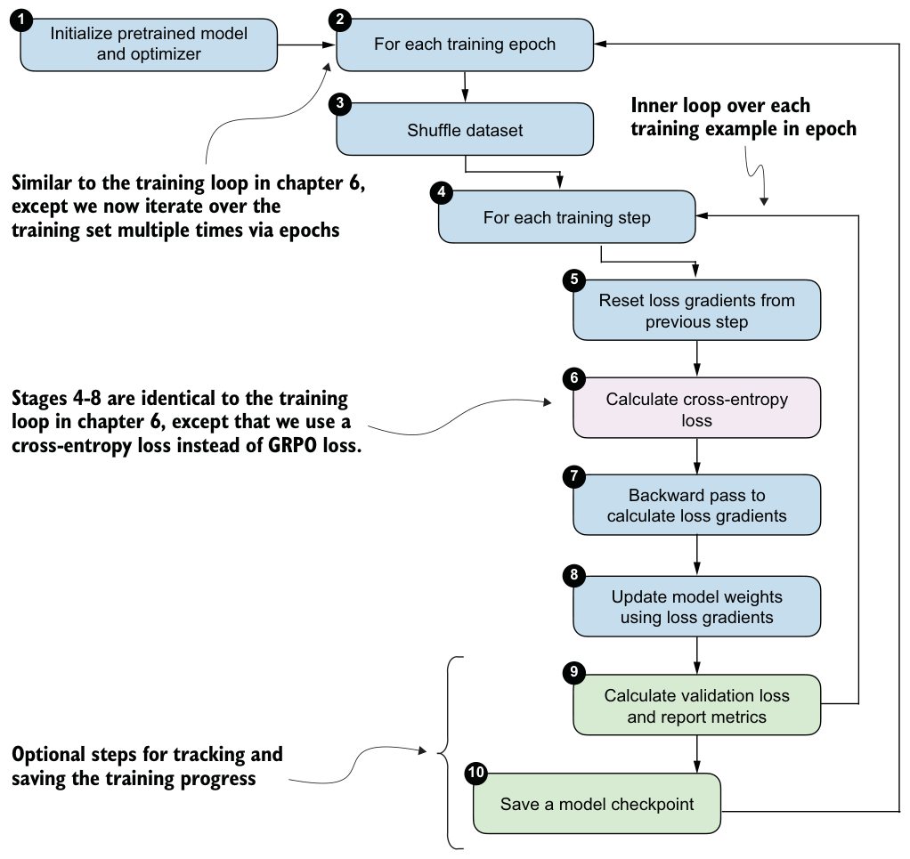

8.7Implementing the training loop for distillation
With the dataset prepared and the loss computation in place, we can now implement the training loop for distillation. This stage is highlighted in figure 8.14.

The training loop we’ll use here is very similar to the one in chapter 6. The main difference is that here we’ll revisit the same training set multiple times across epochs and optimize the cross-entropy distillation loss instead of the GRPO objective (GRPO loss) used in RLVR. The detailed steps are shown in figure 8.15.

The following train_distillation function implements the loop shown in figure 8.15. It shuffles the training examples at the start of each epoch, computes the loss for each example, applies an optimizer step, optionally clips large gradients, and periodically evaluates on the validation set. The metrics are also written to a CSV file so we can inspect the learning curves later.
import time
def train_distillation(
model,
train_examples,
val_examples,
device,
epochs=2,
lr=5e-6,
grad_clip_norm=None,
seed=123,
log_every=50,
checkpoint_dir="checkpoints",
csv_log_path=None,
):
optimizer = torch.optim.AdamW(model.parameters(), lr=lr)
model.train()
total_steps = epochs * len(train_examples)
global_step = 0
rng = random.Random(seed)
if csv_log_path is None:
timestamp = time.strftime("%Y%m%d_%H%M%S")
csv_log_path = f"train_distill_metrics_{timestamp}.csv"
csv_log_path = Path(csv_log_path)
for epoch in range(1, epochs + 1):
epoch_examples = list(train_examples)
rng.shuffle(epoch_examples)
for example in epoch_examples:
global_step += 1
optimizer.zero_grad()
loss = compute_example_loss(model, example, device)
loss.backward()
if grad_clip_norm is not None:
torch.nn.utils.clip_grad_norm_(
model.parameters(), grad_clip_norm
) optimizer.step()
if log_every and global_step % log_every == 0:
val_loss = evaluate_examples(
model=model,
examples=val_examples,
device=device,
)
model.train()
print(
f"[Epoch {epoch}/{epochs} "
f"Step {global_step}/{total_steps}] "
f"train_loss={loss.item():.4f} "
f"val_loss={val_loss:.4f}"
)
append_csv_metrics(
csv_log_path=csv_log_path,
epoch_idx=epoch,
total_steps=global_step,
train_loss=loss.item(),
val_loss=val_loss,
)
ckpt_path = save_checkpoint(
model=model,
checkpoint_dir=checkpoint_dir,
step=global_step,
suffix=f"epoch{epoch}",
)
print(f"Saved checkpoint to {ckpt_path}")
return model
def save_checkpoint(model, checkpoint_dir, step, suffix=""):
checkpoint_dir = Path(checkpoint_dir)
checkpoint_dir.mkdir(parents=True, exist_ok=True)
suffix = f"-{suffix}" if suffix else ""
ckpt_path = (
checkpoint_dir /
f"qwen3-0.6B-distill-step{step:05d}{suffix}.pth"
)
torch.save(model.state_dict(), ckpt_path)
return ckpt_path
def append_csv_metrics(
csv_log_path,
epoch_idx,
total_steps,
train_loss,
val_loss,
):
if not csv_log_path.exists():
csv_log_path.write_text(
"epoch,total_steps,train_loss,val_loss\n",
encoding="utf-8",
)
with csv_log_path.open("a", encoding="utf-8") as f:
f.write(
f"{epoch_idx},{total_steps},{train_loss:.6f},"
f"{val_loss:.6f}\n"
)With a maximum sequence length of 2,048, the full training run requires about 15 GB of GPU memory. If this is too high for your hardware, you can lower the resource requirements by filtering out longer sequences earlier in the notebook, such as by changing
max_len from 2048 to 1024 or 512 in the filter_examples_by_max_len step in listing 8.6.Let’s execute a short training run.
torch.manual_seed(0)train_distillation(
model,
train_examples=train_examples[:10],
val_examples=val_examples[:10],
device=device,
epochs=2,
lr=5e-6,
grad_clip_norm=1.0, seed=123,
log_every=5,
csv_log_path="train_distill_metrics.csv",
)Let’s briefly talk about the settings before we inspect the results. We are keeping the training run intentionally short. For instance, we use only the first 10 training examples and 10 validation examples, and we train for just 2 epochs. This is purely to keep the notebook run lightweight and fast enough for experimentation. For a real distillation run, we would of course train on many more examples, ideally, the whole training set.
The learning rate (lr=5e-6) is in a reasonable range for fine-tuning a pretrained model and worked well for this setup, as reflected in the loss curves discussed shortly.
The gradient clipping setting (grad_clip_norm=1.0) is the same as in chapter 6 and helps prevent unstable updates when a particular example produces unusually large gradients.
The log_every=5 setting means that validation loss is measured every 5 training steps. Since this demo uses only a handful of examples, this produces frequent progress updates so that we can quickly verify that the training loop behaves as expected. In a larger run, we would usually increase this interval to reduce evaluation overhead.
Finally, the csv_log_path="train_distill_metrics.csv" argument stores the training and validation losses in a CSV file so that we can inspect and plot them later.
The main goal of this run is not to achieve the best possible reasoning performance, but to confirm that the distillation pipeline works from end to end. Once that is established, we can move on to larger runs and inspect the resulting learning curves and checkpoints in more detail.
Let’s now take a brief look at the run’s output:
[Epoch 1/2 Step 5/20] train_loss=0.9648 val_loss=0.9082
[Epoch 1/2 Step 10/20] train_loss=0.9844 val_loss=0.8871
Saved checkpoint to checkpoints/qwen3-0.6B-distill-step00010-epoch1.pth
[Epoch 2/2 Step 15/20] train_loss=0.8008 val_loss=0.8707
[Epoch 2/2 Step 20/20] train_loss=0.7148 val_loss=0.8586
Saved checkpoint to checkpoints/qwen3-0.6B-distill-step00020-epoch2.pthEven though this is only a tiny demonstration run, the output already shows the expected overall behavior. Both the training loss and the validation loss decrease over time, which indicates that the student model is becoming better at matching the teacher-generated target sequences. The validation loss is especially useful here because it is computed on held-out examples and therefore provides a cleaner signal that the improvement is not limited to the training samples alone.
We can also see that checkpoints are saved at the end of each epoch. This is useful because it lets us resume training later or evaluate intermediate versions of the distilled model using the MATH-500 test set.